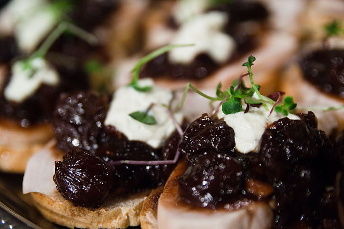

Una Alconbury, August 02, 2015
Chop the olives in a food processor. Transfer to medium bowl. With machine running, drop garlic through the feed tube of the food processor and mince. Add Parmesan, butter, and olive oil, and process into a paste. Add butter mixture to bowl with olives. Fold in jack cheese and parsley.
Cut baguette into thin slices and spread each slice generously with olive mixture.
Cook under broiler until bubbly and lightly browned - about 2 minutes.Serve right out of oven. Helps to make olive mixture in advance and spread right before you put in the oven.
